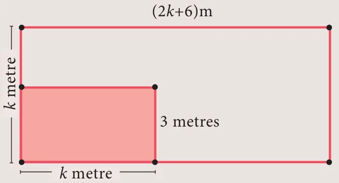

Introduction
Arab mathematician Abraham bar Hiyya Ha-Nasi, often known by the Latin name Savasorda, is famed for his book ‘Liber Embadorum’ published in 1145 AD(CE) which is the first book published in Europe to give the complete solution of a quadratic equation.
For a period of more than three thousand years beginning from early civilizations to current times, humanity knew how to solve a general quadratic equation in terms of its co-efficients by using four arithmetical operations and extraction of roots. This process is called “Solving by Radicals”. Huge amount of research has been carried to this day in solving various types of equations.
Quadratic Expression
An expression of degree \(n\) in variable \(x\) is \(a_0x^n + a_1x^{n-1} + a_2x^{n-2} + \ldots + a_{n-1}x + a_n\) where \(a_0 \neq 0\) and \(a_1, a_2, \ldots a_n\) are real numbers. \(a_0, a_1, a_2, \ldots a_n\) are called coefficients of the expression.
In particular an expression of degree 2 is called a Quadratic Expression which is expressed as \(p(x) = ax^2 + bx + c,\ a \neq 0\) and \(a, b, c\) are real numbers.
3.6.1 Zeroes of a Quadratic Polynomial
Let \(p(x)\) be a polynomial. \(x = a\) is called zero of \(p(x)\) if \(p(a) = 0\)
For example, if \(p(x) = x^2 - 2x - 8\) then \(p(-2) = 4 + 4 - 8 = 0\) and \(p(4) = 16 - 8 - 8 = 0\)
Therefore \(-2\) and 4 are zeros of the polynomial \(p(x) = x^2 - 2x - 8\).
3.6.2 Roots of Quadratic Equations
Let \(ax^2 + bx + c = 0,\ (a \neq 0)\) be a quadratic equation. The values of \(x\) such that the expression \(ax^2 + bx + c\) becomes zero are called roots of the quadratic equation \(ax^2 + bx + c = 0\).
\(\begin{aligned} \text{We have, } ax^2 + bx + c &= 0 \\ a\left[x^2 + \frac{b}{a}x + \frac{c}{a}\right] &= 0 \\ x^2 + \frac{b}{a}x + \frac{c}{a} &= 0 \quad (\text{since } a \neq 0) \\ x^2 + \frac{b}{2a}(2x) + \left(\frac{b}{2a}\right)^2 - \left(\frac{b}{2a}\right)^2 + \frac{c}{a} &= 0 \\ \text{That is, } \quad x^2 + (2x)\left(\frac{b}{2a}\right) + \left(\frac{b}{2a}\right)^2 &= \frac{b^2}{4a^2} - \frac{c}{a} \\ \left(x + \frac{b}{2a}\right)^2 &= \frac{b^2 - 4ac}{4a^2} \\ x + \frac{b}{2a} &= \frac{\pm\sqrt{b^2 - 4ac}}{2a} \\ x &= \frac{-b \pm \sqrt{b^2 - 4ac}}{2a} \end{aligned}\)
Therefore, the roots are \(\frac{-b + \sqrt{b^2 - 4ac}}{2a}\) and \(\frac{-b - \sqrt{b^2 - 4ac}}{2a}\)
3.6.3 Formation of a Quadratic Equation
If \(\alpha\) and \(\beta\) are roots of a quadratic equation \(ax^2 + bx + c = 0\) then
\(\alpha = \frac{-b + \sqrt{b^2 - 4ac}}{2a}\) and \(\beta = \frac{-b - \sqrt{b^2 - 4ac}}{2a}\).
\(\begin{aligned} \text{Also, } \quad \alpha + \beta &= \frac{-b + \sqrt{b^2 - 4ac} - b - \sqrt{b^2 - 4ac}}{2a} = \frac{-b}{a} \\ \text{and } \quad \alpha\beta &= \left(\frac{-b + \sqrt{b^2 - 4ac}}{2a}\right) \times \left(\frac{-b - \sqrt{b^2 - 4ac}}{2a}\right) = \frac{c}{a}. \end{aligned}\)
Note
\(ax^2 + bx + c = 0\) can equivalently be expressed as \(x^2 + \frac{b}{a}x + \frac{c}{a} = 0\), since \(a \neq 0\)
Since, \((x - \alpha)\) and \((x - \beta)\) are factors of \(ax^2 + bx + c = 0\),
\(\begin{aligned} \text{We have } \quad (x - \alpha)(x - \beta) &= 0 \\ \text{Hence, } \quad x^2 - (\alpha + \beta)x + \alpha\beta &= 0 \end{aligned}\)
That is, \(x^2 - (\text{sum of roots})\,x + \text{product of roots} = 0\) is the general form of the quadratic equation when the roots are given.
Activity 2

Consider a rectangular garden in front of a house, whose dimensions are \((2k + 6)\) metre and \(k\) metre. A smaller rectangular portion of the garden of dimensions \(k\) metre and 3 metres is leveled. Find the area of the garden, not leveled.
Example 3.23
Find the zeroes of the quadratic expression \(x^2 + 8x + 12\).
Solution
Let \(p(x) = x^2 + 8x + 12 = (x + 2)(x + 6)\)
\(p(-2) = 4 - 16 + 12 = 0\)
\(p(-6) = 36 - 48 + 12 = 0\)
Therefore \(-2\) and \(-6\) are zeros of \(p(x) = x^2 + 8x + 12\)
Example 3.24
Write down the quadratic equation in general form for which sum and product of the roots are given below.
(i) 9, 14 (ii) \(-\frac{7}{2}, \frac{5}{2}\) (iii) \(-\frac{3}{5}, -\frac{1}{2}\)
Solution
- General form of the quadratic equation when the roots are given is
\(\begin{aligned} x^2 - (\text{sum of the roots})\,x + \text{product of the roots} &= 0 \\ x^2 - 9x + 14 &= 0 \end{aligned}\)
- \(x^2 - \left(-\frac{7}{2}\right)x + \frac{5}{2} = 0 \;\Rightarrow\; 2x^2 + 7x + 5 = 0\)
- \(x^2 - \left(-\frac{3}{5}\right)x + \left(-\frac{1}{2}\right) = 0 \;\Rightarrow\; \frac{10x^2 + 6x - 5}{10} = 0\)
Therefore, \(10x^2 + 6x - 5 = 0\).
Example 3.25
Find the sum and product of the roots for each of the following quadratic equations : (i) \(x^2 + 8x - 65 = 0\) (ii) \(2x^2 + 5x + 7 = 0\) (iii) \(kx^2 - k^2x - 2k^3 = 0\)
Solution
Let \(\alpha\) and \(\beta\) be the roots of the given quadratic equation
- \(x^2 + 8x - 65 = 0\)
\(a = 1,\ b = 8,\ c = -65\)
\(\alpha + \beta = -\frac{b}{a} = -8\) and \(\alpha\beta = \frac{c}{a} = -65\)
\(\alpha + \beta = -8;\ \alpha\beta = -65\)
- \(2x^2 + 5x + 7 = 0\)
\(a = 2,\ b = 5,\ c = 7\)
\(\alpha + \beta = -\frac{b}{a} = \frac{-5}{2}\) and \(\alpha\beta = \frac{c}{a} = \frac{7}{2}\)
\(\alpha + \beta = -\frac{5}{2};\ \alpha\beta = \frac{7}{2}\)
- \(kx^2 - k^2x - 2k^3 = 0\)
\(a = k,\ b = -k^2,\ c = -2k^3\)
\(\alpha + \beta = -\frac{b}{a} = \frac{-(-k^2)}{k} = k\) and \(\alpha\beta = \frac{c}{a} = \frac{-2k^3}{k} = -2k^2\)